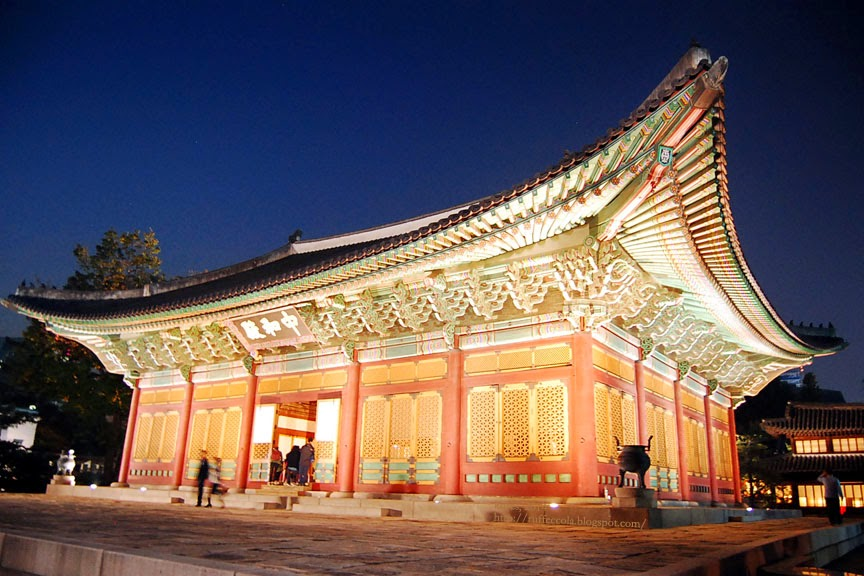
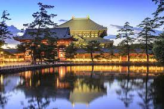

BEAUTIFUL PLACES IN THE WORLD
Asia Tourist Spot
Deoksugung

Deoksugung (Korean: 덕수궁) also known as Gyeongun-gung, Deoksugung Palace, or Deoksu Palace, is a walled compound of palaces in Seoul that was inhabited by members of Korea's royal family during the Joseon monarchy until the annexation of Korea by Japan in 1910. It is one of the "Five Grand Palaces" built by the kings of the Joseon dynasty and designated as a Historic Site. The buildings are of varying styles, including some of natural cryptomeria wood[citation needed]), painted wood, and stucco. Some buildings were built of stone to replicate western palatial structures.
In addition to the traditional palace buildings, there are also forested gardens, a statue of King Sejong the Great and the National Museum of Art, which holds special exhibitions. The palace is located near City Hall Station.
Borobudur
 Borobudur, also transcribed Barabudur is a 9th-century Mahayana Buddhist temple in Magelang Regency, not far from the city of Magelang and the town of Muntilan, in Central Java, Indonesia. It is the world's largest Buddhist temple.
Borobudur, also transcribed Barabudur is a 9th-century Mahayana Buddhist temple in Magelang Regency, not far from the city of Magelang and the town of Muntilan, in Central Java, Indonesia. It is the world's largest Buddhist temple.
Nara

Nara was the capital of Japan during the Nara period from 710 to 794 as the seat of the Emperor before the capital was moved to Kyoto. Nara is home to eight temples, shrines, and ruins, specifically Tōdai-ji, Saidai-ji, Kōfuku-ji, Kasuga Shrine, Gangō-ji, Yakushi-ji, Tōshōdai-ji, and the Heijō Palace, together with Kasugayama Primeval Forest, collectively form the Historic Monuments of Ancient Nara, a UNESCO World Heritage Site.
Europe Tourist Spot
Europe Colosseum
 The Colosseum is an elliptical amphitheatre in the centre of the city of Rome, Italy, just east of the Roman Forum. It is the largest ancient amphitheatre ever built, and is still the largest standing amphitheatre in the world, despite its age.
The Colosseum is an elliptical amphitheatre in the centre of the city of Rome, Italy, just east of the Roman Forum. It is the largest ancient amphitheatre ever built, and is still the largest standing amphitheatre in the world, despite its age.
Stonehenge

Stonehenge, prehistoric stone circle monument, cemetery, and archaeological site located on Salisbury Plain, about 8 miles (13 km) north of Salisbury, Wiltshire, England. Though there is no definite evidence as to the intended purpose of Stonehenge, it was presumably a religious site and an expression of the power and wealth of the chieftains, aristocrats, and priests who had it built—many of whom were buried in the numerous barrows close by. It was aligned on the Sun and possibly used for observing the Sun and Moon and working out the farming calendar. Or perhaps the site was dedicated to the world of the ancestors, separated from the world of the living, or was a healing centre. Whether it was used by the Druids (Celtic priests) is doubtful, but present-day Druids gather there every year to hail the midsummer sunrise. Looking toward the sunrise, the entrance in the northeast points over a big pillar, now leaning at an angle, called the Heel Stone. Looking the other way, it points to the midwinter sunset. The summer solstice is also celebrated there by huge crowds of visitors.
The Eiffel Tower

The Eiffel Tower is a wrought-iron lattice tower on the Champ de Mars in Paris, France. It is named after the engineer Gustave Eiffel, whose company designed and built the tower from 1887 to 1889. Locally nicknamed "La dame de fer", it was constructed as the centerpiece of the 1889 World's Fair.
America Tourist Spot
America Washington, D.C.

Washington, DC, the U.S. capital, is a compact city on the Potomac River, bordering the states of Maryland and Virginia. It’s defined by imposing neoclassical monuments and buildings – including the iconic ones that house the federal government’s 3 branches: the Capitol, White House and Supreme Court. It's also home to iconic museums and performing-arts venues such as the Kennedy Center.
America Houston

Houston is a large metropolis in Texas, extending to Galveston Bay. It’s closely linked with the Space Center Houston, the coastal visitor center at NASA’s astronaut training and flight control complex. The city’s relatively compact Downtown includes the Theater District, home to the renowned Houston Grand Opera, and the Historic District, with 19th-century architecture and upscale restaurants.
America The Grand Cayon

Grand Canyon National Park, in Arizona, is home to much of the immense Grand Canyon, with its layered bands of red rock revealing millions of years of geological history. Viewpoints include Mather Point, Yavapai Observation Station and architect Mary Colter’s Lookout Studio and her Desert View Watchtower. Lipan Point, with wide views of the canyon and Colorado River, is a popular, especially at sunrise and sunset.